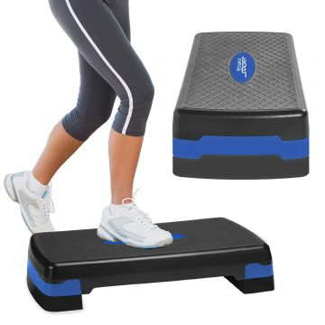

1. Treadmill
It is one of the widely popular commercial gym equipment. This
equipment offers a great warm up exercise before you indulge yourself
in a hardcore, and more muscle and bone-stressing exercise machine.
If you just want to shed off some weight and burn extra calories,
this gym equipment will do the trick.
2. Ellipticals
Considered as one of the best commercial gym equipment because
of its low-impact features. This means that less stress and
tension is distributed to the joints and bones, therefore
exercise-related injuries are less likely to occur.
3.Stationary Bikes
This is a good alternative for outdoor biking. Burning your calories and
getting an overall workout,you can have it all when you use this commercial
gym equipment. Not only is it safe because you get to exercise indoors, but
stationary bikes are relatively easy to operate.
4. Aerobic steppers
It is considered as simple yet effective commercial gym equipment
that enables you to perform various exercises such as step ups, lateral
jumps, and jumping drills.

5.Cable Pulley Machines
A cable pulley machine is one of the commercial gym equipments that uses weights system. The weight
stacks are lifted by pulleys and you can utilize one side or both at the same time.
You can also adjust it so that you can pull up, down or across to work different muscle
groups depending on what your needs.

6.Weight machines
This particular commercial gym equipment is highly favourable for those hardcore athletes and body-builders.
This is a great choice for people who want to develop their arm muscles.
7.Free weights
Barbells and kettleballs are some of the examples.
This commercial gym equipment enables you to do full range of motion exercise while utilizing your upper muscles.

8.Abdominal Crunchers
If your main target is to tone your abdominal muscles, the best gym equipment that
you can find in commercial gyms is the abdominal cruncher. To use this exercise instrument is so easy
that you don’t need any professional help. It’s like performing crunches except that this time, you’re
doing it with a tool.
9. Rowing Machines
This gym equipment enhances your flexibility and versatility. Since it utilizes both the
upper (when you glide and pull the machine) and lower (the rower itself) muscles, this
commercial gym equipment delivers an overall body workout.
10.Exercise Balls
Commercial gyms will be empty and useless without this equipment. The exercise ball is a versatile
gym tool that would certainly help you target your abdominal muscles.